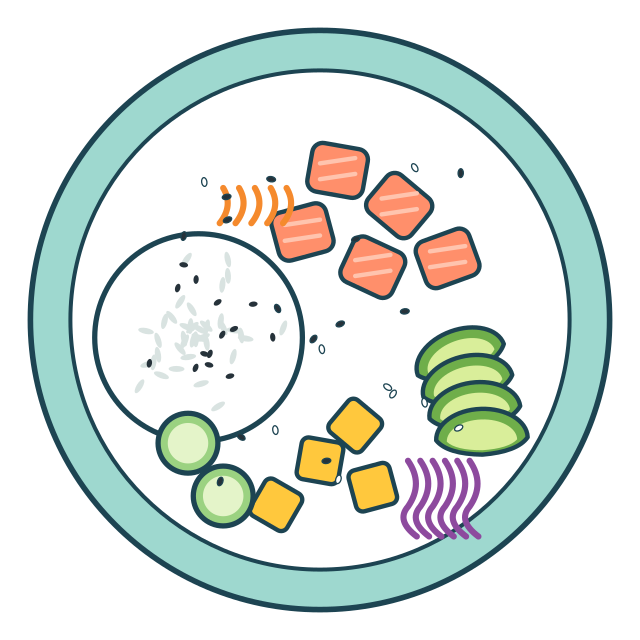

.png)

Cena
Poke bowl de salmón
- Tiempo35 min
- Rinde2 porciones
- DificultadFácil
Pescado crudo: usa salmón fresco, de buena procedencia y apto para consumo crudo, y mantenlo refrigerado. Si no estás seguro, séllalo a la plancha en lugar de comerlo crudo.
Ingredientes
Base y proteína
- 300 g de arroz para sushi, cocido y frío
- 250 g de salmón fresco apto para consumo crudo
Toppings
- ½ aguacate
- ½ mango
- ½ pepino
- 1 zanahoria pequeña
- Repollo morado al gusto
- 1 cebolleta (cebolla larga), picada
- Semillas de ajonjolí blancas y negras al gusto
Marinada
- 45 ml de salsa ponzu
- 15 ml de salsa de soya
- 1 cucharadita de jengibre fresco rallado
Aderezo
- 30 ml de salsa ponzu
- 15 ml de aceite de ajonjolí
- 1 cucharadita de miel
Preparación
- Mezcla los ingredientes de la marinada, añade el salmón en dados y refrigera al menos 15 minutos.
- Mezcla los ingredientes del aderezo hasta que la miel se disuelva; prueba y ajusta.
- Corta el aguacate, el mango, el pepino, la zanahoria y el repollo.
- Arma el bowl: arroz frío de base, el salmón en el centro y los toppings alrededor.
- Termina con el aderezo, el ajonjolí y la cebolleta.
Consejos
- Si no encuentras ponzu, prueba salsa de soya con un poco de jugo de limón (no es idéntico, pero se acerca).
- Para un toque picante, cambia el aderezo por spicy mayo o por un aliño de miso.
Receta adaptada de Directo al Paladar. Texto reescrito y cantidades tomadas de la fuente.